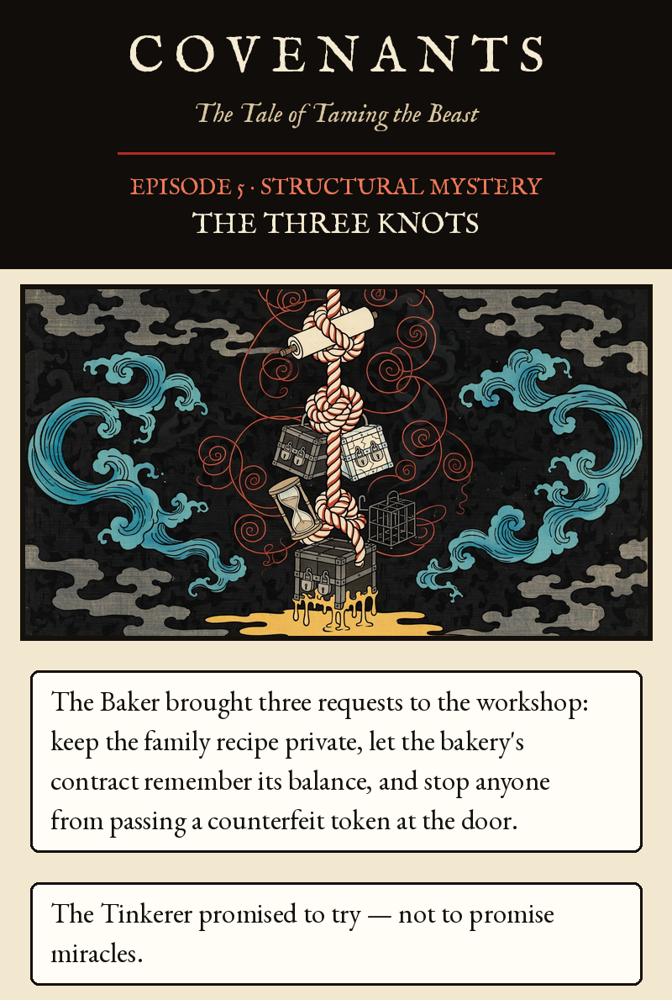
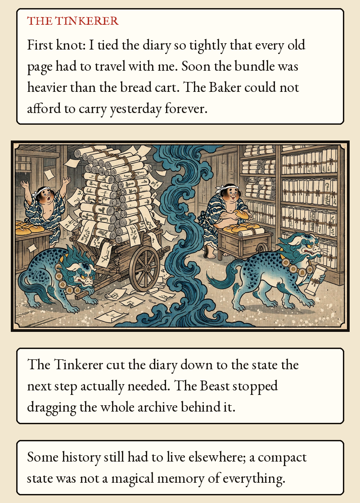
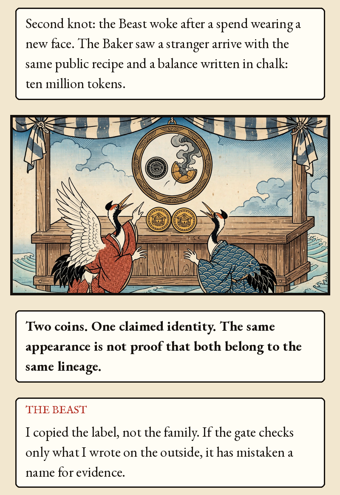
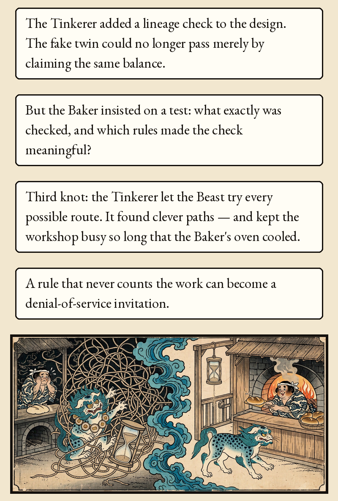
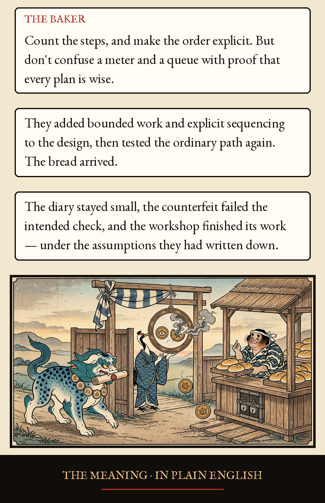
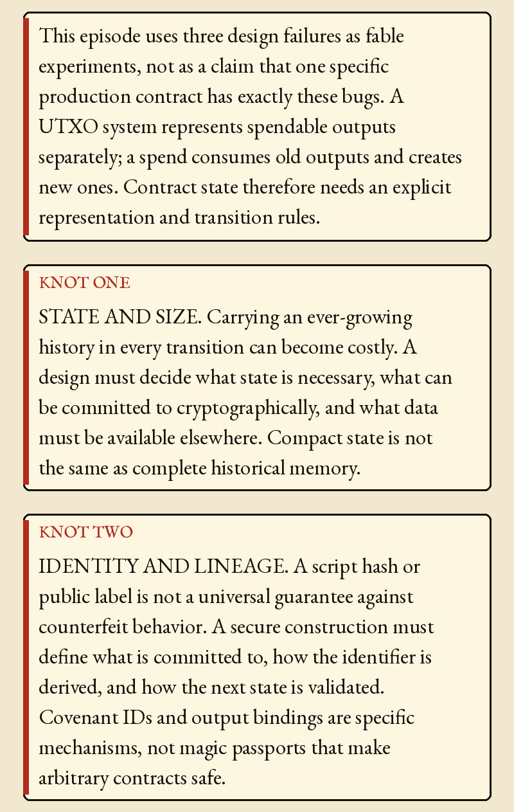
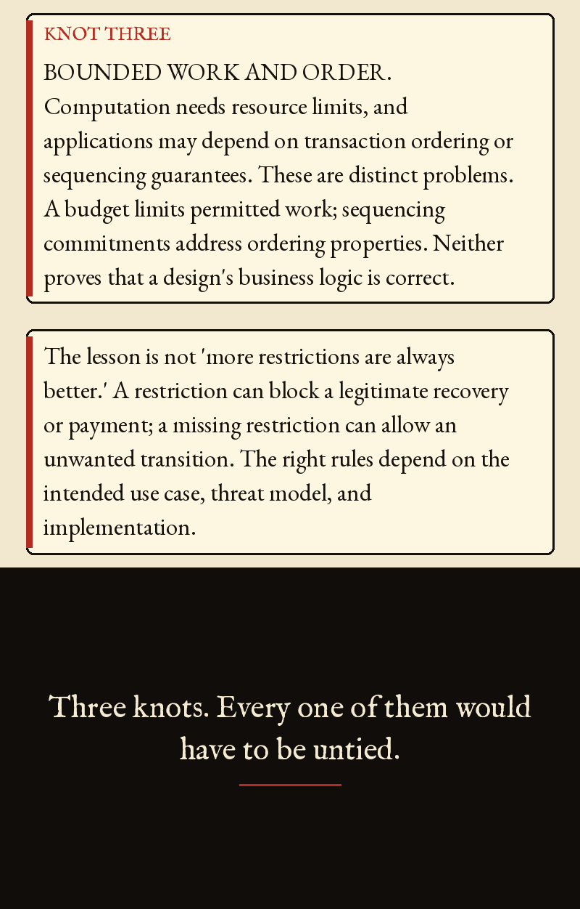
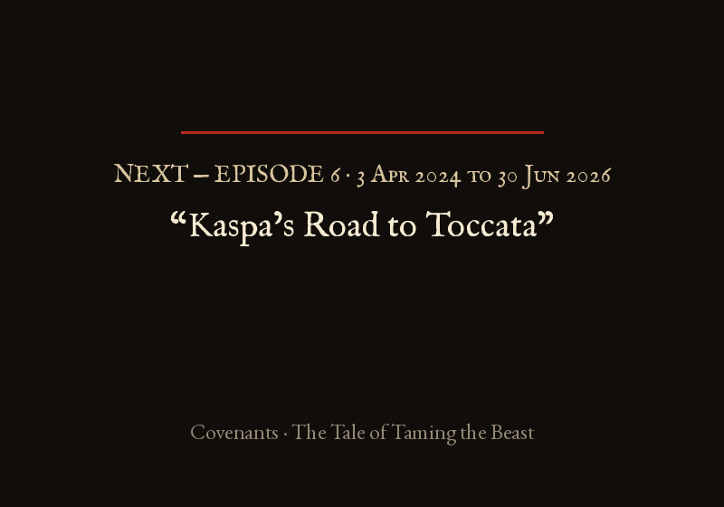

Episode 5 · The Three Knots








Episode 5 · The Three Knots — Structural Mystery
The Baker brought three requests to the workshop: keep the family recipe private, let the bakery's contract remember its balance, and stop anyone from passing a counterfeit token at the door. The Tinkerer promised to try — not to promise miracles.
THE TINKERER: First knot: I tied the diary so tightly that every old page had to travel with me. Soon the bundle was heavier than the bread cart. The Baker could not afford to carry yesterday forever.
The Tinkerer cut the diary down to the state the next step actually needed. The Beast stopped dragging the whole archive behind it. Some history still had to live elsewhere; a compact state was not a magical memory of everything.
Second knot: the Beast woke after a spend wearing a new face. The Baker saw a stranger arrive with the same public recipe and a balance written in chalk: ten million tokens.
Two coins. One claimed identity. The same appearance is not proof that both belong to the same lineage.
THE BEAST: I copied the label, not the family. If the gate checks only what I wrote on the outside, it has mistaken a name for evidence.
The Tinkerer added a lineage check to the design. The fake twin could no longer pass merely by claiming the same balance. But the Baker insisted on a test: what exactly was checked, and which rules made the check meaningful?
Third knot: the Tinkerer let the Beast try every possible route. It found clever paths — and kept the workshop busy so long that the Baker's oven cooled. A rule that never counts the work can become a denial-of-service invitation.
THE BAKER: Count the steps, and make the order explicit. But don't confuse a meter and a queue with proof that every plan is wise.
They added bounded work and explicit sequencing to the design, then tested the ordinary path again. The bread arrived. The diary stayed small, the counterfeit failed the intended check, and the workshop finished its work — under the assumptions they had written down.
THE MEANING · IN PLAIN ENGLISH
This episode uses three design failures as fable experiments, not as a claim that one specific production contract has exactly these bugs. A UTXO system represents spendable outputs separately; a spend consumes old outputs and creates new ones. Contract state therefore needs an explicit representation and transition rules.
KNOT ONE — STATE AND SIZE. Carrying an ever-growing history in every transition can become costly. A design must decide what state is necessary, what can be committed to cryptographically, and what data must be available elsewhere. Compact state is not the same as complete historical memory.
KNOT TWO — IDENTITY AND LINEAGE. A script hash or public label is not a universal guarantee against counterfeit behavior. A secure construction must define what is committed to, how the identifier is derived, and how the next state is validated. Covenant IDs and output bindings are specific mechanisms, not magic passports that make arbitrary contracts safe.
KNOT THREE — BOUNDED WORK AND ORDER. Computation needs resource limits, and applications may depend on transaction ordering or sequencing guarantees. These are distinct problems. A budget limits permitted work; sequencing commitments address ordering properties. Neither proves that a design's business logic is correct.
The lesson is not 'more restrictions are always better.' A restriction can block a legitimate recovery or payment; a missing restriction can allow an unwanted transition. The right rules depend on the intended use case, threat model, and implementation.
Three knots. Every one of them would have to be untied.
KIP-17, Covenants and Improved Scripting Capabilities: https://raw.githubusercontent.com/kaspanet/kips/master/kip-0017.md; KIP-20, Covenant IDs: https://raw.githubusercontent.com/kaspanet/kips/master/kip-0020.md; KIP index: https://github.com/kaspanet/kips. The three knots are illustrative failure modes, not claims that one deployed contract exhibits all three. Exact semantics must be checked against the relevant KIP and implementation.